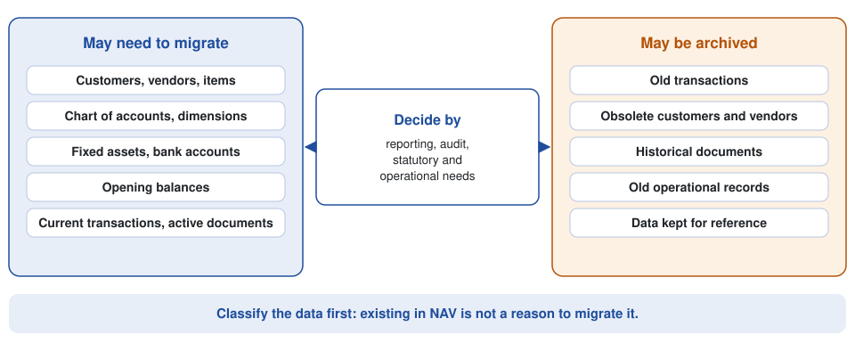
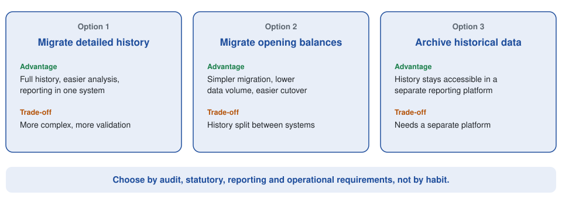
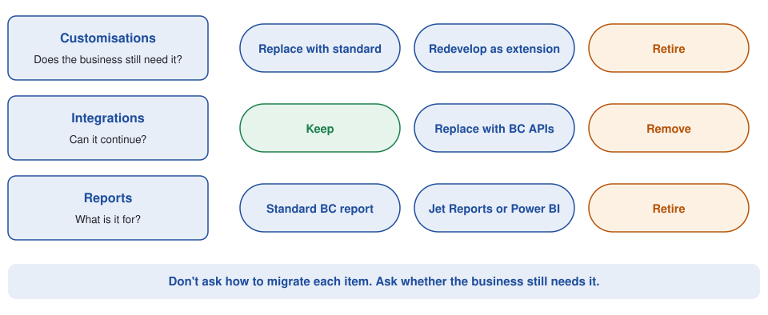
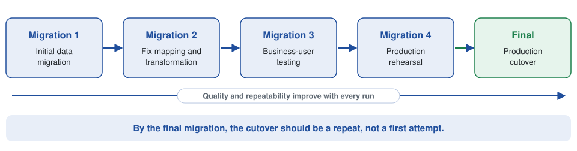

NAV to Business Central Data Migration: A Practical Guide
Moving from Microsoft Dynamics NAV to Dynamics 365 Business Central is more than an upgrade to a newer version of the same ERP. For many organisations it combines data migration, application modernisation, integration changes, reporting changes and a review of business processes. The data migration is one of the most important parts of the project, and this guide covers the key considerations when planning it.
What is a NAV to Business Central migration?
Dynamics NAV is the predecessor to Dynamics 365 Business Central. Many organisations have used NAV for years and have accumulated custom tables, fields, reports and code, third-party add-ons, integrations, historical transactions and bespoke business processes. Moving to Business Central therefore needs more than copying data from one database to another. The project has to answer seven questions:
- What data should be migrated?
- What data can be archived?
- How does the existing data map to Business Central?
- Which customisations need to be replaced?
- Which integrations need to be redesigned?
- How will the migrated data be validated?
- How will Finance reconcile the new system with NAV?
Microsoft documents specific routes for moving NAV and on-premises Business Central to Business Central online, including cloud migration tooling for suitable scenarios. Its guidance distinguishes a full migration, which brings customisations across as AL extensions, from a reimplementation that moves only essential data, and it recommends at least one dry run in a sandbox before production (Microsoft Learn).
Should all NAV data be migrated?
Not necessarily, and this is one of the first decisions to make. A common mistake is assuming that because data exists in NAV it must all be transferred. A better approach is to classify it.

Data that may need to be migrated: customers, vendors, items, chart of accounts, dimensions, fixed assets, bank accounts, opening balances, current transactions, and active sales and purchase documents.
Data that may be archived: old transactions, obsolete customers and vendors, historical documents, old operational records, and data retained primarily for reference.
The right decision depends on reporting, audit, statutory and operational requirements. Some organisations need several years of transactional history to stay accessible. For others, migrating opening balances and current operational data while keeping older history in a separate reporting platform is more appropriate.
NAV customisations need to be assessed
Older NAV implementations often contain significant customisation. Before starting, create an inventory of the existing solution:
- Custom tables, custom fields and modified standard objects
- Custom reports, pages and code
- Interfaces and scheduled jobs
- Third-party modules and external applications
The key question is not “how do we migrate this customisation?” It is “does the business still need this functionality?” Some customisations are no longer required. Others can be replaced by standard Business Central functionality. Some need to be redeveloped as Business Central extensions.
NAV data mapping
The legacy data structure has to be mapped to the target Business Central environment. A mapping document might look like this:
| NAV source | Business Central target | Migration rule |
|---|---|---|
| Customer No. | Customer No. | Retain |
| Customer Name | Customer Name | Clean |
| Customer Posting Group | Customer Posting Group | Map |
| Vendor No. | Vendor No. | Retain |
| G/L Account | G/L Account | Map |
| Department | Dimension | Convert |
| Cost Centre | Dimension | Convert |
| Fixed Asset | Fixed Asset | Map |
| Bank Account | Bank Account | Validate |
The exact mapping depends on the NAV version, the customisations and the Business Central design.
Dimensions are particularly important
Dimensions can have a major impact on a migration. An organisation may have used custom fields in NAV for department, cost centre, project, location, programme or business unit. These may need to become Business Central dimensions:
| NAV (custom fields) | Business Central (dimensions) |
|---|---|
| Department = FIN | Department = FIN |
| CostCentre = 100 | Cost Centre = 100 |
| Project = P001 | Project = P001 |
The migration has to preserve the financial meaning of the original information. Simply importing the values is not enough.
Migrating the chart of accounts
Review the chart of accounts before migration. Some organisations keep the existing structure. Others use the move to rationalise it. For example, NAV accounts 4000 Sales, 4010 Domestic Sales and 4020 Export Sales might become a single 4000 Revenue account in Business Central, with the additional analysis provided through dimensions.
That can simplify financial reporting, but it also changes the migration and reporting requirements. Finance should make the decision and it should be reflected in the migration mapping.
Customer and vendor migration
Profile customer and vendor data before migration, looking for:
- Duplicate records and inactive accounts
- Missing addresses and invalid VAT information
- Incorrect currencies and payment terms
- Invalid posting groups and missing dimensions
- Obsolete contacts
Migrating poor-quality master data simply moves the problem into Business Central, so cleanse it before the final production migration.
Fixed asset migration
Fixed assets need particular care because the migration may have to preserve asset number, description, acquisition cost, depreciation, accumulated depreciation, net book value, depreciation method and periods, asset class and posting groups. The approach depends on whether you are migrating detailed historical asset transactions or establishing opening balances. Finance should sign off the resulting fixed asset balances.
Opening balances
Opening balances are often one of the most important parts of the migration. A typical financial migration may need G/L, customer, vendor, bank, fixed asset and inventory balances. The resulting Business Central balances should reconcile to the agreed NAV closing position:
| NAV closing balance | €8,425,620 |
|---|---|
| Business Central opening balance | €8,425,620 |
| Difference | €0 |
Perform this kind of reconciliation systematically rather than relying on visual inspection.
Historical transactions
Historical transactions need their own strategy, and there are three broad options.

Option 1: migrate detailed history. Historical transactions are loaded into Business Central. You get full transaction history, easier Business Central analysis and historical reporting in one system. The cost is a more complex migration, more data, greater validation requirements and potentially longer migration windows.
Option 2: migrate opening balances. Only the required opening financial position is migrated, and history stays in the legacy environment or a reporting platform. The migration is simpler, with lower data volume and an easier cutover, but historical reporting is split between systems.
Option 3: archive historical data. NAV history is kept in a separate reporting or archive environment. This gives access to history without making the Business Central migration unnecessarily complicated.
NAV integrations need to be reviewed
The ERP is rarely operating on its own. NAV may be integrated with CRM, payroll, banking, ecommerce, warehouse systems, websites, payment systems, data warehouses, reporting applications and external APIs. Document every interface before migration and decide for each one:
- Keep: can the existing integration continue?
- Replace: should it be redesigned using Business Central APIs or another integration mechanism?
- Remove: is the integration still required?
Business Central provides standard APIs and supports custom APIs for integration with external applications. For the options in detail, see Business Central Integration: What Are the Options?
NAV reports need to be reviewed
A NAV implementation may contain dozens or hundreds of reports. Do not automatically recreate all of them. Categorise them instead:
- Still required: rebuild or replace them.
- Replace with standard Business Central: no custom development required.
- Replace with Jet Reports: useful for Excel-based financial and operational reporting. See How to Create a Custom Jet Report in Business Central.
- Replace with Power BI: appropriate for dashboards, analytics and broader management information.
- No longer required: retire them.
This can significantly reduce unnecessary development during the migration.

Testing the migration
A NAV to Business Central migration should be performed several times before production. A typical approach is:
- Migration 1: initial data migration.
- Migration 2: correct mapping and transformation issues.
- Migration 3: business-user testing.
- Migration 4: production rehearsal.
- Final migration: production cutover.
Each iteration should improve the quality and repeatability of the migration.

Data migration reconciliation
Build financial reconciliation into the migration process. Useful checks include:
- General ledger: total debits, total credits, trial balance and account balances.
- Customers: customer count, outstanding balance and aged receivables.
- Vendors: vendor count, outstanding balance and aged payables.
- Bank: bank account balances and reconciliation position.
- Fixed assets: acquisition cost, accumulated depreciation and net book value.
- Inventory: quantity, value and location.
The objective is evidence that the Business Central data agrees with the agreed NAV source position. For a wider view of validation, see Business Central Data Migration: The Complete Guide.
NAV to Business Central migration checklist
Discovery
- Identify the NAV version
- Inventory customisations, integrations and reports
- Identify data owners
- Define migration scope
Data
- Profile source data, identify duplicates and clean master data
- Map customers, vendors, items, G/L accounts, dimensions and fixed assets
- Define the historical data strategy
Migration
- Extract NAV data, transform it and load Business Central
- Validate record counts and reconcile financial balances
- Test integrations and reporting
Cutover
- Final data extraction, transformation and migration
- Financial reconciliation and business sign-off
- Go-live and post-go-live validation
How much does a NAV to Business Central migration cost?
There isn’t a single price. The cost depends heavily on the NAV version, number of companies, data volume, customisations, historical data requirements, number of integrations, reporting requirements, data quality, required testing and cutover complexity.
A relatively clean NAV environment with limited customisation can be considerably simpler than a heavily customised system with multiple integrations and decades of history. The first step should therefore be a migration assessment, rather than trying to estimate the whole project from the number of records alone.
Planning a NAV to Business Central migration?
A successful NAV to Business Central migration needs a combination of ERP knowledge, data understanding and technical implementation capability. My experience spans Business Central, Dynamics ERP, financial systems, data migration, ETL, integrations, SQL, reporting and Power Platform. That includes migrating financial information into Business Central, mapping legacy data, working with dimensions, customers, vendors, fixed assets and opening balances, and validating the resulting financial data.
The objective is straightforward: move the right data, preserve its business meaning and prove that the resulting Business Central system reconciles with the source. Get in touch at declan@feelyconsultants.com or find me on LinkedIn.